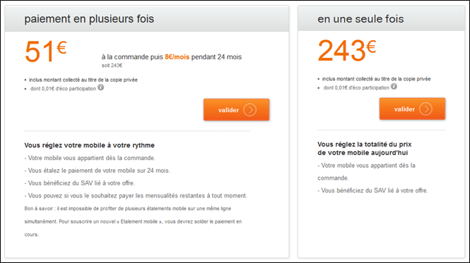

Rendre les intitulés des liens et des boutons compréhensibles hors contexte
Cible : tout le monde, et en particulier les personnes déficientes visuelles, cognitives ou ayant un déficit d’attention.
Quand : dès la phase de conception et lors du développement.
Description :
Rendre les intitulés des liens et des boutons compréhensibles hors contexte, en particulier pour les déficients visuels. Lors de la navigation avec un lecteur d’écran, il est possible d’accéder à la liste des liens de la page pour naviguer rapidement. Si votre page contient plusieurs liens « en savoir plus », il sera impossible de les différencier les uns des autres.
S’il n’est pas possible de rendre un lien ou un bouton plus explicite par l'intitulé, faute de place, mais que l’intitulé actuel est suffisant dans son contexte, on doit utiliser un attribut title pour faire apparaître une info-bulle, reprenant l'ensemble de l'information nécessaire, au survol avec la souris, mais également compléter l'intitulé par un contenu supplétif, au choix, via :
- un morceau de texte caché par masquage accessible via CSS
- en utilisant un attribut
aria-labelouaria-labelledbyreprenant l'intégralité du contenu dutitle(cf. les attributs ARIA qui peuvent vous sauver).
Par exemple dans l’image ci-dessous, les deux éléments « valider » ne sont pas suffisamment explicites pour une personne utilisant un lecteur d’écran et ne bénéficiant pas obligatoirement du contexte. En revanche, quand on voit l’écran, le contexte fait qu’il n’y a pas d’ambiguïté sur leur rôle.

Solutions :
Ajouter un span en masquage accessible pour compléter l’intitulé. Il ne sera pas affiché à l’écran mais sera vocalisé par les outils d’assistance.
<a href="…" title="Valider le paiement en plusieurs fois">valider<span class="masquage-accessible"> le paiement en plusieurs fois</span></a>
<a href="…" title="Valider le paiement en une seule fois">valider<span class="masquage-accessible"> le paiement en une seule fois</span></a>
Une autre solution consiste à utiliser un attribut aria-label ou aria-labelledby pour préciser l’intitulé (cf. les attributs ARIA qui peuvent vous sauver).
<a href="…" title="Valider le paiement en plusieurs fois" aria-label="Valider le paiement en plusieurs fois">valider</span></a>
<a href="…" title="Valider le paiement en une seule fois" aria-label="Valider la paiement en une seule fois">valider</span></a>
À vérifier : S’assurer que la sémantique HTML soit respectée :
- un lien doit permettre de changer d’URL, de page, de télécharger un fichier, de faire apparaître/disparaître du contenu, d’aller à un ancre.
- un bouton doit permettre de soumettre/réinitialiser un formulaire, d’ouvrir une fenêtre modale, de faire apparaître un sous-menu, de piloter un media, de déclencher une action via JS.
S’assurer que les liens et les boutons isolés du contenu donnent une bonne information sur l’action déclenchée ou sa destination.
Une page ne doit pas avoir plusieurs liens ou boutons dont l’intitulé est le même, mais pointant sur des destinations/actions différentes.
Objectif utilisateur : Permettre à un utilisateur n’ayant pas accès au contexte visuel de connaître la destination du lien ou l’action du bouton.
Notamment important pour les utilisateurs naviguant grâce à une liste de liens extraite de la page (lecteurs d’écran) ou les utilisateurs de loupe logicielle qui ne voient qu’une fraction de la page.
Objectif technique : Expliciter les liens et les boutons permet d’améliorer le référencement naturel.
Exemple valide :
Associer à un lien « cliquer ici », un texte caché hors écran : « commander votre téléphone ».
Exemple non-valide :
Liens « Cliquez ici » ou « Lire la suite… » sans plus de précision.
Référence WCAG :